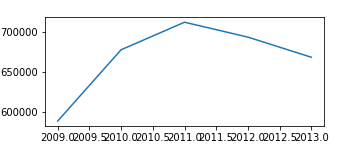
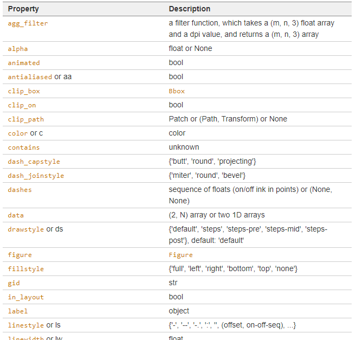
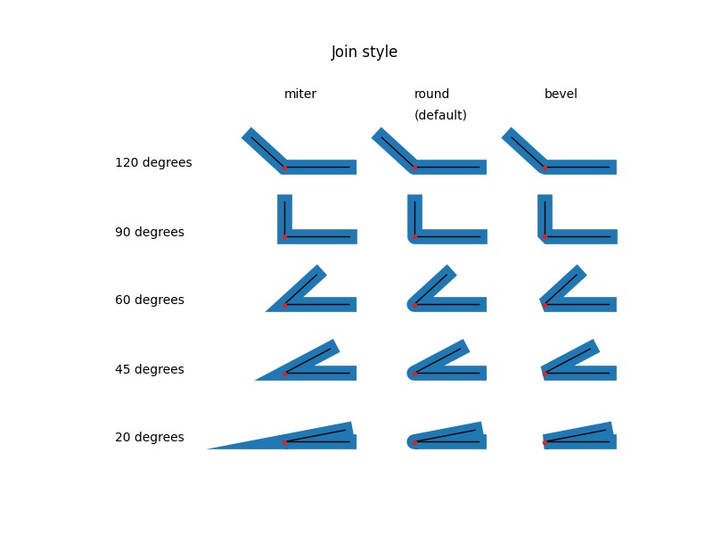
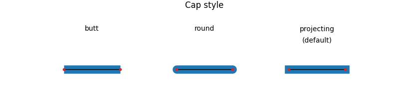
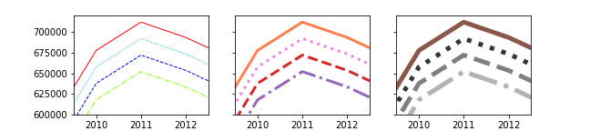
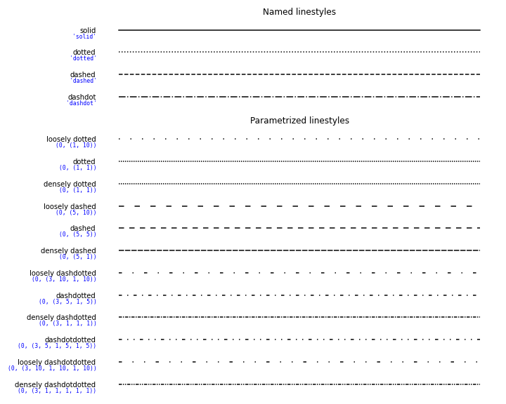
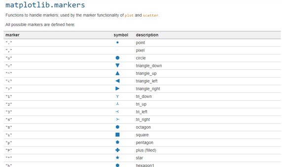
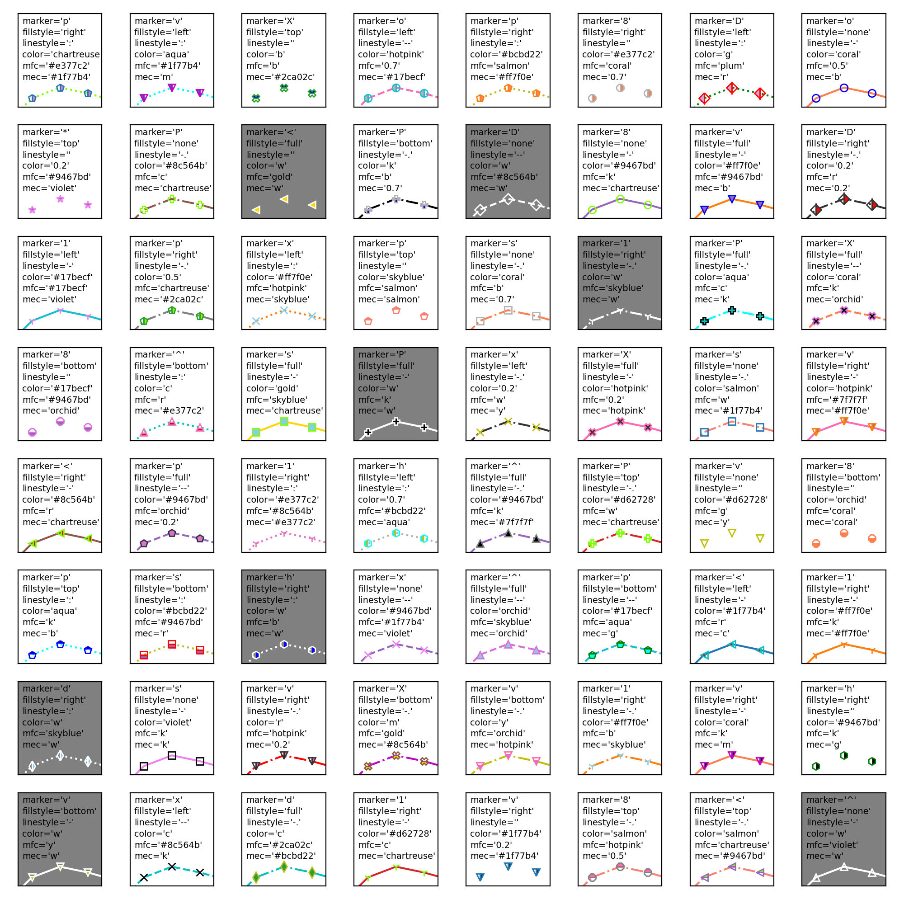

- matplotlib의 가장 기본적인 시각화 명령은
plot()입니다. - 데이터를 line plot으로 표현하는 명령인데 marker만 남기면 scatter plot도 가능합니다.
- 여러 옵션들을 한 눈에 그려봅니다.
1. Sample Data
- 수능 데이터에서 일부를 가져옵니다.
1
2x = np.array([2009, 2010, 2011, 2012, 2013])
y = np.array([588839, 677834, 712227, 693631, 668522])
2. plot()
2.1. 기본 그림
- 기본 명령만 사용해서 그려봅니다.
1
2fig, ax = plt.subplots(figsize=(5, 2))
ax.plot(x, y)
- line plot이 그려집니다.
- 그런데 plot()에는 엄청나게 많은 옵션이 있습니다.

- 이 중 알아두면 유용한 것들을 살펴봅시다.
2.2. Join styles, Cap styles
join style은 line plot의 꺾이는 지점 표현 방식
cap style은 line plot의 양 끝지점 표현 방식입니다.

solid_capstyle과solid_joinstyle은 실선,dash_capstyle과dash_joinstyle은 점선과 파선에 적용됩니다.
2.3. line
matplotlib.lines.Line2D
matplotlib.colors
matplotlib Linestyles
- Line은 두께
linewidth, 색상color, 스타일linestyle을 조정할 수 있습니다. - 각기
.plot()안에linewidth=,color=,linestyle=로 지정하면 되는데, linewidth는lw,color는c,linestyle은ls로 줄여서 넣을 수 있습니다.
- ※ 주의 ※
linecolor가 아니라color입니다.- matplotlib의 인자 이름에 통일성이 부족합니다.
- 그 바람에 많이 헷갈리는데,
color가 대표적인 사례입니다.
- 위 세 가지 옵션을 조합해서 그림을 그려봅니다.
1
2
3
4
5
6
7
8
9
10
11
12linewidths = [1, 3, 5]
colors = ['r', 'c', 'b', "chartreuse", "coral", "violet", '#d62728', '#9467bd', '#8c564b', "0.2", "0.5", "0.7"]
linestyles = ["-", ":", "--", "-."]
fig, axs = plt.subplots(ncols=3, figsize=(9, 2), sharex=True, sharey=True)
for i, (ax, lw) in enumerate(zip(axs, linewidths)):
for j, (y_offset, c, ls) in enumerate(zip(range(0, -80000, -20000), colors, linestyles)):
ax.plot(x, y+y_offset, lw=lw, c=colors[4*i+j], ls=ls)
axs[0].set_xlim(2009.5, 2012.5)
axs[0].set_ylim(600000, 720000)
color의 형식이 다양합니다.- 색상 이름, 색상 이름 약자, (R, G, B) array, #RGBA hex code를 모두 지원합니다.
- 예를 들어 랜덤 색상은
color=[np.random.random(), np.random.random(), np.random.random()]으로 쉽게 구현할 수 있습니다.
linestyle도 형식이 다양합니다.dotted,:,(0, (1, 1))모두 점선을 의미합니다.- 특히 tuple을 모스 부호처럼 넣어주면 거기에 대응되는 dot과 dash의 조합이 만들어집니다.

2.4. marker
- marker는 line보다 옵션이 많습니다.
- 모양
marker, 크기markersize(또는ms), 채우기 색상markerfacecolor(또는mfc), 채우기 스타일fillstyle, 윤곽선 색상markeredgecolor(또는mec), 윤곽선 굵기markeredgewidth(또는mew)에 건너뛰기 빈도markevery까지 있습니다. - 이 중 marker 모양만 해도 종류가 많기 때문에 자주 쓰는 몇 개만 사용하는 것이 일반적입니다.
- 하지만 때로 공식 홈페이지를 뒤져서 변화를 주는 것도 좋습니다.

- line과 marker 인자를 일부를 조합해서 시각화합니다.
- 일부라도 해도 경우의 수가 너무 많아서 random하게 조합되도록 했습니다.
1
2
3
4
5
6
7
8
9
10
11
12
13
14
15
16
17
18
19
20
21
22
23
24
25
26
27
28
29
30
31
32
33
34
35
36
37
38
39
40
41
42
43markerstyles = ['o', 'v', '^', '<', '8', '1', '2', 'x', 's', 'p', '*', 'h', 'H', 'D', 'd', 'P', 'X']
fillstyles = ['full', 'left', 'right', 'bottom', 'top', 'none']
linestyles = ['-', '--', '-.', ':', '']
colors = ['b', 'g', 'r', 'c', 'm', 'y', 'k', 'w',
"gold", "chartreuse", "skyblue", "plum", "coral", "violet", "salmon", "aqua", "hotpink", "orchid",
'#1f77b4', '#ff7f0e', '#2ca02c', '#d62728', '#9467bd', '#8c564b', '#e377c2', '#7f7f7f', '#bcbd22', '#17becf',
"0.2", "0.5", "0.7"]
len_m = len(markerstyles)
len_f = len(fillstyles)
len_l = len(linestyles)
len_c = len(colors)
fig, axes = plt.subplots(nrows=8, ncols=8, figsize=(10, 10), sharex=True, sharey=True)
axs = axes.ravel()
for ax in axs:
marker = markerstyles[np.random.choice(len_m)]
fillstyle = fillstyles[np.random.choice(len_f)]
linestyle = linestyles[np.random.choice(len_l)]
color = colors[np.random.choice(len_c)]
mfc = colors[np.random.choice(len_c)]
mec = colors[np.random.choice(len_c)]
if color == "w" or mec == "w":
color = "w"
mec = "w"
ax.set_facecolor("0.5")
ax.plot(x, y, marker=marker,
mfc=mfc, mec=mec,
fillstyle=fillstyle, linestyle=linestyle, color=color)
ax.set_xlim(2009.5, 2012.5)
ax.set_ylim(650000, 950000)
ax.set_xticks([])
ax.set_yticks([])
for text_y, e in zip(np.arange(0.89, 0.18, -0.12), ["marker", "fillstyle", "linestyle", "color", "mfc", "mec"]):
ax.text(0.05, text_y, f"{e}='{eval(e)}'", transform=ax.transAxes, fontsize="x-small")
fig.set_facecolor("w")
fig.tight_layout()
fig.savefig("53_mpl_plot_2.png", dpi=200)
3. 결론
plot()은 matplotlib의 여러 기능 중 가장 자유도가 높은 명령이 아닐까 싶습니다.- 오늘 소개한 것 외에도
drawstyle을 이용해서 step을 만들 수도 있고alpha를 이용해서 투명도를 조절할 수도 있습니다. - 선택지가 너무나 많기 때문에 대부분의 교재나 tutorial에서 극히 일부만을 소개하고 있습니다. 공식 문서를 통해 다양한 가능성을 확인해보시기 바랍니다.